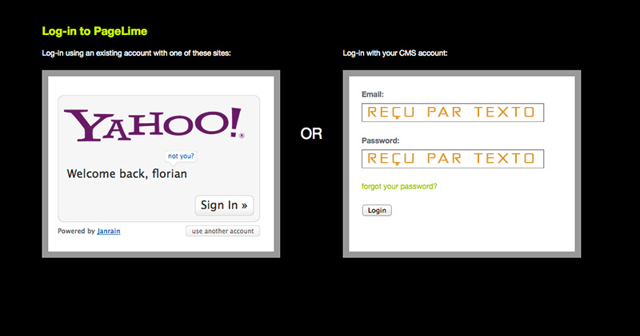

PAGE LIME
pour l'édition via un navigateur web (firefox, etc...):

Connection au Compte "Page Lime"
Utilisez le formulaire de droite, avec l'identifiant et le mot de passe envoyés par SMS.
Vous disposez avec ces identifiants d'un compte "utilisateur", vous ne pourrez donc pas accéder à certains paramètres de configuration (gestion de la connection au serveur FTP, ajout/retrait de fonctions dans l'éditeur visuel..). Pas de risque ainsi d'erreurs critiques ou irréversibles.
Lien direct